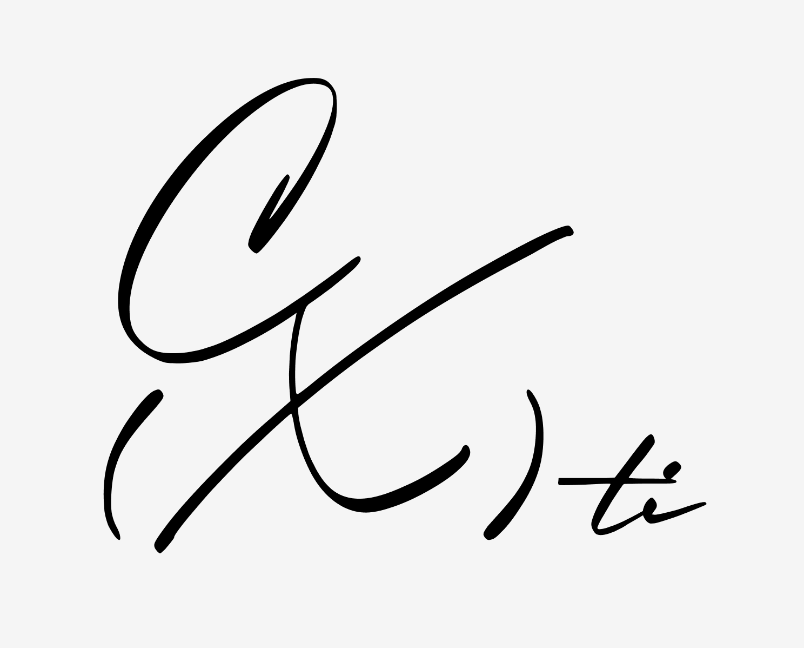

CHEN × XIUMIN SHIPPER DIAGNOSTIC REPORT

20题，4大维度，17种结果（含一种隐藏人格）
测一测你是城堡忠实信徒还是淡然的吃家
感谢你参与 CXTI-omega 公测版！
抱歉，我们可能欺骗了你，实际上，你将面对长达 42题的超大题库……（现在跑还来得及）本次公测的重要目的就是将之筛选、缩减到 20 题左右。因此，你的反馈非常重要！
在答题的同时，请在题目的右上角点击 ❤️ 或 👎 告诉我们你是否喜欢这道题！
另外，如果你认为选项中没有符合你的答案，请在 E 选项中填写你认为更适合的答案！
请记住这是测试版本，不完善之处多多包容！
Q1
的 C(X)TI 结果是：
正浓乱素
ZNLS
在这里显示描述文本...
你属于四大类型中的：
混乱快乐型杂食狂欢派
描述文字...